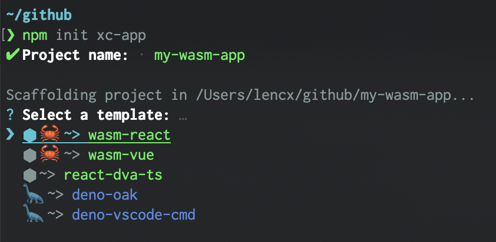
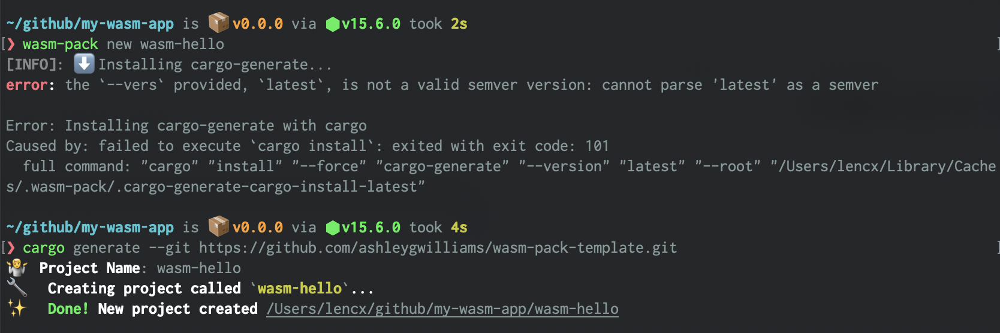
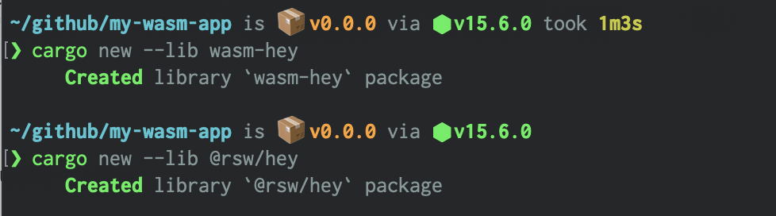

README
{折腾 ⇌ 迷茫 ⇌ 思考]ing，在路上...
I'm Xin Chen, front-end developer from China. I love to explore and learn about new things...
Languages and Tools
Things I code with
| 📦 Projects | 📃 Description | ⭐ Stars | 📚 Forks |
|---|---|---|---|
| 〽️ nofwl | my blog |  |
 |
| 😎 mtc | my tools & config, and awesome lists |  |
 |
| ⚡️ create-xc-app | create a project in seconds! |  |
 |
| 🧩 vite-plugin-rsw | wasm-pack plugin for vite@v2 |  |
 |
| 🥸 learn-wasm | learning webAssembly |  |
 |
| 📂 deno-getfiles | recursively get all files in a directory |  |
 |
| 🦕 deno-example | deno example |  |
 |
| 🦀 rust-learn | rust learn |  |
 |
| 🔗 short-link | link shortener |  |
 |
| 🎶 music | music generator |  |
 |
Awesome
WebAssembly
- MDN WebAssembly
- webassembly.org: WebAssembly（缩写为Wasm）是基于堆栈的虚拟机的二进制指令格式。 Wasm被设计为编程语言的可移植编译目标，从而可以在Web上为客户端和服务器应用程序进行部署。
- Rust 🦀 and WebAssembly 🕸: This small book describes how to use Rust and WebAssembly together.
- WebAssembly入门
- In-browser transcoding of video files with FFmpeg and WebAssembly
- Standardizing WASI: A system interface to run WebAssembly outside the web
- Learning WebAssembly Series: A series of learning texts covering the first steps with WebAssembly for complete beginners.
- wapm:
WAPMis the WebAssembly Package Manager. - wasi-fs-access: This is a demo shell powered by WebAssembly, WASI, Asyncify and File System Access API.
- The WebAssembly App Gap
- Why using WebAssembly and Rust together improves Node.js performance
- FFMPEG.WASM: ffmpeg.wasm is a pure WebAssembly / JavaScript port of FFmpeg. It enables video & audio record, convert and stream right inside browsers.
- A WebAssembly CHIP-8 Emulator: A WebAssembly CHIP-8 emulator written with Rust
- NoteCalc is a handy notepad with a smart builtin calculator.
- wasmboy: Game Boy / Game Boy Color Emulator Library, 🎮written for WebAssembly using AssemblyScript. 🚀Demos built with Preact and Svelte. ⚛️
Rust
- Awesome Rust: A curated list of awesome Rust frameworks, libraries and software. Inspired by awesome-go.
WebAssembly
WebAssembly入门
Wasm是什么?
MDN官方文档是这样给出定义
WebAssembly(为了书写方便，简称Wasm)是一种新的编码方式，可以在现代的网络浏览器中运行 － 它是一种低级的类汇编语言，具有紧凑的二进制格式，可以接近原生的性能运行，并为诸如C / C ++等语言提供一个编译目标，以便它们可以在Web上运行。它也被设计为可以与JavaScript共存，允许两者一起工作。
对于网络平台而言，WebAssembly具有巨大的意义——它提供了一条途径，以使得以各种语言编写的代码都可以以接近原生的速度在Web中运行。在这种情况下，以前无法以此方式运行的客户端软件都将可以运行在Web中。
WebAssembly被设计为可以和JavaScript一起协同工作——通过使用WebAssembly的JavaScript API，你可以把WebAssembly模块加载到一个JavaScript应用中并且在两者之间共享功能。这允许你在同一个应用中利用WebAssembly的性能和威力以及JavaScript的表达力和灵活性，即使你可能并不知道如何编写WebAssembly代码。
环境安装及简介
1. Rust
一门赋予每个人
构建可靠且高效软件能力的语言。
安装
# macOS
curl --proto '=https' --tlsv1.2 -sSf https://sh.rustup.rs | sh
# 其他安装方式
# https://forge.rust-lang.org/infra/other-installation-methods.html
常用命令
# 版本更新
rustup update
# 查看版本
cargo --version
# 构建项目
cargo build
# 运行项目
cargo run
# 测试项目
cargo test
# 为项目构建文档
cargo doc
# 将库发布到 crates.io
cargo publish
# nightly rust
rustup toolchain install nightly
rustup toolchain list
rustup override set nightly
2. Node.js
Node.js是基于Chrome的V8 JavaScript引擎构建的JavaScript运行时
3. wasm-pack
用于构建和使用您希望与JavaScript，浏览器或Node.js互操作的Rust生成的WebAssembly。
安装
# macOS
curl https://rustwasm.github.io/wasm-pack/installer/init.sh -sSf | sh
# 其他安装方式
# https://rustwasm.github.io/wasm-pack/installer
常用命令
# 创建
# https://rustwasm.github.io/docs/wasm-pack/commands/new.html
wasm-pack new <name> --template <template> --mode <normal|noinstall|force>
# 构建
# https://rustwasm.github.io/docs/wasm-pack/commands/build.html
wasm-pack build
[--out-dir <out>]
[--out-name <name>]
[--<dev|profiling|release>]
[--target <bundler|nodejs|web|no-modules>]
[--scope <scope>]
[mode <normal|no-install>]
# 测试
# https://rustwasm.github.io/docs/wasm-pack/commands/test.html
wasm-pack test
# 发包
# https://rustwasm.github.io/docs/wasm-pack/commands/pack-and-publish.html
# npm pack
wasm-pack pack
# npm publish
wasm-pack publish
4. Vite
下一代前端工具
vite-plugin-rsw：vite插件，简称Rsw - 集成wasm-pack的CLI
- 支持rust包文件热更新，监听
src目录和Cargo.toml文件变更，自动构建 - vite启动优化，如果之前构建过，再次启动
npm run dev，则会跳过wasm-pack构建 - 通过配置
isLib为true，在执行npm run build时会生成可发布的npm包
# 在vite项目中安装
npm i -D vite-plugin-rsw
# or
yarn add -D vite-plugin-rsw
5. create-xc-app
脚手架 - ⚡️在几秒钟内创建一个项目！维护了多种项目模板。
# 根据命令行提示，输入项目名称，选择模板初始化项目
# template: `wasm-react` or `wasm-vue`
npm init xc-app

快速开始
- 在原有
vite项目中使用，只需安装配置vite-plugin-rsw插件即可。 - 新项目可以使用
vite提供的@vitejs/app初始化项目，然后安装配置vite-plugin-rsw。 - 或者使用脚手架
create-xc-app初始化项目，模板包含wasm-react和wasm-vue，会定期更新维护相关版本依赖。
项目结构
# 推荐目录结构
[my-wasm-app] # 项目根路径
|- [wasm-hey] # npm包`wasm-hey`
| |- [pkg] # 生成wasm包的目录
| | |- wasm-hey_bg.wasm # wasm文件
| | |- wasm-hey.js # 包入口文件
| | |- wasm-hey_bg.wasm.d.ts # ts声明文件
| | |- wasm-hey.d.ts # ts声明文件
| | |- package.json
| | `- ...
| |- [src] # rust源代码
| | # 了解更多: https://doc.rust-lang.org/cargo/reference/cargo-targets.html
| |- [target] # 项目依赖，类似于npm的`node_modules`
| | # 了解更多: https://doc.rust-lang.org/cargo/reference/manifest.html
| |- Cargo.toml # rust包管理清单
| `- ...
|- [@rsw] # npm 组织包
| |- [hey] # @rsw/hey, 目录结构同`wasm-hey`
| `- ...
| # 设置`isLib`为true时，会默认在`libs`目录下生成的npm包
| # 可以通过设置`libRoot`修改默认路径
|- [libs]
| |- [@rsw]
| `- [wasm-hey]
|- [node_modules] # 前端的项目包依赖
|- [src] # 前端源代码(可以是vue, react, 或其他)
| # 了解更多: https://nodejs.dev/learn/the-package-json-guide
|- package.json # `npm`或`yarn`包管理清单
| # 了解更多: https://vitejs.dev/config
|- vite.config.ts # vite配置文件
| # 了解更多: https://www.typescriptlang.org/docs/handbook/tsconfig-json.html
|- tsconfig.json # typescript配置文件
` ...
乍一看，可能会觉得目录有点复杂，其实它就是一个标准的基于vite前端项目，然后，在根路径下去添加我们需要构建的wasm包(一个rust crate会对应生成一个wasm包，可单独发布到npm上)
创建Wasm包
# 两种方式创建
# 1.
# 如果报错，可查看：https://github.com/rustwasm/wasm-pack/issues/907
wasm-pack new <name>
# 2.
# name可以是npm组织
# 例：cargo new --lib @rsw/hello
# 需要手动配置Cargo.toml
cargo new --lib <name>
 
项目配置
以react项目为例
Step1: 配置Vite插件 - vite.config.ts
import reactRefresh from '@vitejs/plugin-react-refresh';
import { defineConfig } from 'vite';
import ViteRsw from 'vite-plugin-rsw';
export default defineConfig({
plugins: [
reactRefresh(),
// 查看更多：https://github.com/lencx/vite-plugin-rsw
ViteRsw({
// 支持开发(dev)和生产模式(release)
// 生产模式会对wasm文件的体积进行优化
mode: 'release',
// 是否生成可发布的npm包，默认为`false`
// 如果设置为`true`时，会在项目根路径下生成`libs`目录
isLib: true,
// 修改默认路径`libs`
libRoot: 'libs',
// 如果包在`unLinks`和`crates`都配置过
// 会执行，先卸载(npm unlink)，再安装(npm link)
// 例如下面会执行
// `npm unlink wasm-hey rsw-test`
unLinks: ['wasm-hey', 'rsw-test'],
// 项目根路径下的rust项目
// `@`开头的为npm组织
// 例如下面会执行:
// `npm link wasm-hey @rsw/hey`
// 因为执行顺序原因，虽然上面的unLinks会把`wasm-hey`卸载
// 但是这里会重新进行安装
crates: ["wasm-hey", "@rsw/hey"],
}),
],
})
Step2: 配置Rust项目清单 - wasm-hey/Cargo.toml
# ...
# https://github.com/rustwasm/wasm-pack/issues/886
# https://developers.google.com/web/updates/2019/02/hotpath-with-wasm
[package.metadata.wasm-pack.profile.release]
wasm-opt = false
# See more keys and their definitions at https://doc.rust-lang.org/cargo/reference/manifest.html
[lib]
crate-type = ["cdylib", "rlib"]
[profile.release]
opt-level = "s"
[dependencies]
wasm-bindgen = "0.2.70"
Step3: 添加Rust代码 - wasm-hey/src/lib.rs
#![allow(unused)] fn main() { use wasm_bindgen::prelude::*; // Import the `window.alert` function from the Web. #[wasm_bindgen] extern "C" { fn alert(s: &str); } // Export a `greet` function from Rust to JavaScript, that alerts a hello message. #[wasm_bindgen] pub fn greet(name: &str) { alert(&format!("Hello, {}!", name)); } }
Step4: React项目中调用Wasm方法 - src/App.tsx
import React, { useEffect } from 'react';
import init, { greet } from 'wasm-hey';
import logo from './logo.svg';
import './App.css';
function App() {
useEffect(() => {
// wasm初始化，在调用`wasm-hey`包方法时
// 必须先保证已经进行过初始化，否则会报错
// 如果存在多个wasm包，则必须对每一个wasm包进行初始化
init();
}, [])
const handleHey = () => {
// 调用greet方法
greet('wasm');
}
return (
<div className="App">
<header className="App-header">
<img src={logo} className="App-logo" alt="logo" />
<p>Hello WebAssembly!</p>
<p>Vite + Rust + React</p>
<p>
<button onClick={handleHey}>hi wasm</button>
</p>
<p>Edit <code>App.tsx</code> and save to test HMR updates.</p>
</header>
</div>
)
}
export default App
常见问题汇总
Rsw插件
- 插件内部是通过
npm link的形式实现的wasm包安装，在一些极端场景下会出现，找不到依赖的安装包，导入的包不存在等错误，可以根据提示路径删除其link的文件，重新启动npm run dev可以解决。 npm link命令会把包link到全局环境，如果在多个项目使用相同wasm包名，可能会导致报错，解决办法，在全局npm的node_modules中删除该包即可。推荐不同项目使用不同wasm包名避免此类异常。- 插件是处于Vite开发模式下运行构建，所以至少执行过一次
npm run dev，生成wasm包之后，再执行npm run build，否则也会报错，到不到.wasm文件之类的。 - 插件API可以配置需要卸载的包(仅限于之前通过插件配置
crates中rust项目)
前端
// init是wasm实例的初始化方法
// 在调用其他方法之前，必须先调用一次init方法，否则会报错
// init会请求`.wasm`文件并且返回一个`Promise`
import init, { greet } from 'wasm-test';
// -----------------------------------------
// 调用init方法，有两种方式
// 1.
// 在react，vue3中可以将其抽离为`hook`组件,
// 在进入生命周期时调用
init();
// 在调用过init方法之后，可以单独调用greet方法
greet('wasm');
// 2.
// 在初始化之后直接调用方法
init()
.then(wasm => wasm.greet('wasm'));
相关链接
- Wasm学习项目: lencx/learn-wasm
- Vite插件Rsw - lencx/vite-plugin-rsw
- 项目脚手架 - lencx/create-xc-app
- WebAssembly相关资源清单
- WebAssembly官网
- Rust官网 - 一门赋予每个人 构建可靠且高效软件能力的语言
- Nodejs官网 - 基于Chrome的V8 JavaScript引擎构建的JavaScript运行时
- Vite官网 - 下一代前端工具
- wasm-pack - Rust => WebAssembly
- rust-to-wasm
- wasm-bindgen
康威生命游戏
康威生命游戏（英语：Conway's Game of Life），又称康威生命棋，是英国数学家约翰·何顿·康威在1970年发明的细胞自动机。 它最初于1970年10月在《科学美国人》杂志上马丁·葛登能的“数学游戏”专栏出现。
游戏规则
生命游戏的宇宙是一个无限的二维正交方格，每个方格处于两种可能的状态之一，即存活或死亡，或处于填充或未填充状态。每个单元都与其八个邻居进行交互，这八个邻居在水平，垂直或对角线相邻。在每个步骤中，都会发生以下转换：
- 当前细胞为存活状态时，当周围的存活细胞低于2个时（不包含2个），该细胞变成死亡状态。（模拟生命数量稀少）
- 当前细胞为存活状态时，当周围有2个或3个存活细胞时，该细胞保持原样。
- 当前细胞为存活状态时，当周围有超过3个存活细胞时，该细胞变成死亡状态。（模拟生命数量过多）
- 当前细胞为死亡状态时，当周围有3个存活细胞时，该细胞变成存活状态。（模拟繁殖）
宇宙的初始状态

可以把最初的细胞结构定义为种子，当所有在种子中的细胞同时被以上规则处理后，可以得到第一代细胞图。按规则继续处理当前的细胞图，可以得到下一代的细胞图，周而复始。
Algorithm
算法(algorithm)，在数学和计算机科学中，一个被定义好的、计算机可实现指令的有限步骤或次序。常用于执行计算，数据处理，自动推理和其他任务等。
算法是计算机处理信息的本质，因为计算机程序本质上是一个算法来告诉计算机确切的步骤来执行一个指定的任务。一般，当算法在处理信息时，会从输入设备或数据的存储地址读取数据，把结果写入输出设备或某个存储地址供以后再调用。
复杂度
复杂度(by complexity)分为时间复杂度(time complexity)和空间复杂度(space complexity)
时间复杂度
是指算法需要消耗的时间资源。一般来说，计算机算法是问题规模 的函数 ，算法的时间复杂度也因此记作
算法执行时间的增长率与 的增长率正相关，称作渐近时间复杂度，简称时间复杂度。
常见的时间复杂度有
| 名词 | 符号 |
|---|---|
| 常数阶 | |
| 对数阶 | |
| 线性阶 | |
| 线性对数阶 | |
| 平方阶 | |
| 立方阶 | |
| 次方阶 | |
| 指数阶 | |
| ... | ... |
空间复杂度
是指算法需要消耗的空间资源。其计算和表示方法与时间复杂度类似，一般都用复杂度的渐近性来表示。
常用设计模式
完全遍历法和不完全遍历法：在问题的解是有限离散解空间，且可以验证正确性和最优性时，最简单的算法就是把解空间的所有元素完全遍历一遍，逐个检测元素是否是我们要的解。这是最直接的算法，实现往往最简单。但是当解空间特别庞大时，这种算法很可能导致工程上无法承受的计算量。这时候可以利用不完全遍历方法——例如各种搜索法和规划法——来减少计算量。
分治法: 把一个问题分割成互相独立的多个部分分别求解的思路。这种求解思路带来的好处之一是便于进行并行计算。动态规划法: 当问题的整体最优解就是由局部最优解组成的时候，经常采用的一种方法。贪心算法: 常见的近似求解思路。当问题的整体最优解不是（或无法证明是）由局部最优解组成，且对解的最优性没有要求的时候，可以采用的一种方法。简并法: 把一个问题通过逻辑或数学推理，简化成与之等价或者近似的、相对简单的模型，进而求解的方法。
常用实现方法
递归方法和迭代方法顺序计算、并行计算和分布式计算: 顺序计算就是把形式化算法用编程语言进行单线程序列化后执行。确定性算法和非确定性算法精确求解和近似求解
参考链接
线性表
线性表(linear list)，是由n(n≥0)个数据元素(结点) a[0], a[1], a[2]..., a[n-1]组成的有限序列。
链表
链表(linked list)，是一种基础数据结构，是一种线性表，但是并不会按线性的顺序存储数据，而是在每一个节点里存到下一个节点的指针(Pointer)。由于不必须按顺序存储，链表在插入的时候可以达到O(1)的复杂度。
单链表
单向链表(singly linked list)，其节点包含两个字段：整数值和到下一个节点的链接。
双链表
双向链表(doubly linked list)，其节点包含三个字段：整数值，指向下一个节点的链接和指向上一个节点的链接，既能向前查询也可以向后查询。
循环单链表
循环单链表(circular linked list)，单链表尾部的指针指向头节点。